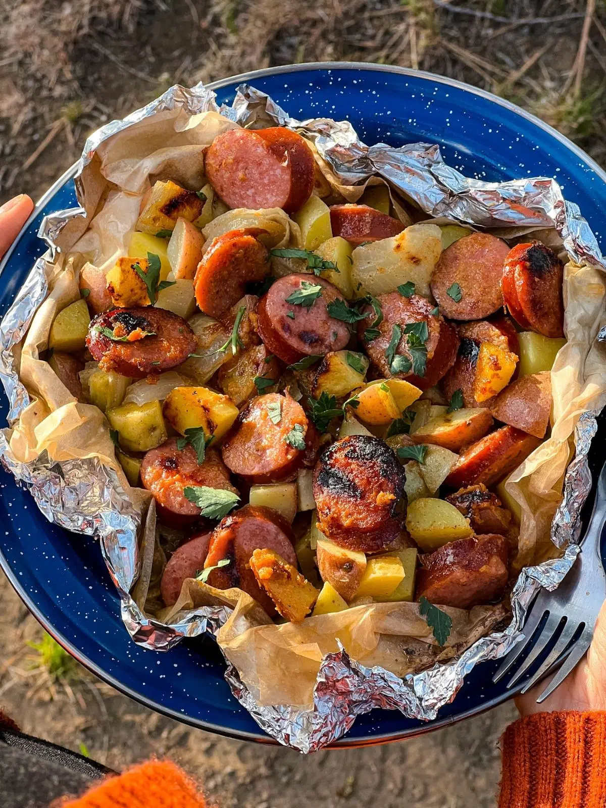

Kielbasa & Potato Packet

Description
Get ready to savor the perfect harmony of smoky kielbasa, tender potatoes,
and a medley of savory flavors with our
Kielbasa & Potato Packets. This campfire recipe is a true delight
for outdoor enthusiasts seeking a hearty and effortless meal. Nestled in a
cozy foil packet, the robust aroma of grilled kielbasa mingles with the
earthy fragrance of seasoned potatoes, creating a symphony of tastes that
will transport you to campfire bliss. With each bite, you'll experience
the satisfying combination of juicy sausage, perfectly cooked potatoes,
and a harmonious blend of herbs and spices. Whether you're camping under
starlit skies or simply craving a rustic outdoor feast, these foil packets
are your ticket to a satisfying and delicious campfire dining experience.
Prepare to unwrap a bundle of smoky delight and let the flavors of the
great outdoors awaken your taste buds.
Ingredients
- Heavy duty aluminum foil
- Parchment paper
- 7 oz kielbasa
- 12 oz small potatoes
- 1/2 onion
- 1 teaspoon sea salt
- 1/2 teaspoon garlic powder
- 1/4 teaspoon paprika
- 2 tablespoons spicy mustard
- 1 tablespoon honey
- 1 teaspoon apple cide vinegar
- 2 tablespoons butter
- parsley
Steps
-
Slice the kielbasa into 1/2 inch rounds, cut potatoes into 1-inch
pieces, and roughly chop the onion.
-
Tear 4 x 18” pieces of heavy-duty foil for each packet, along with 4 x
16” sheets of parchment paper for each. Layer the parchment paper on top
of the foil.
-
Divide the kielbasa, potatoes, onions, salt & spices, sauce, and butter
between the four sheets of foil.
-
To form the packets, bring one of the short edges of the foil to meet
the other, then crimp around all edges to seal.
-
Cook the packets on a grill (or the grill grate over your campfire) for
18-22 minutes, flipping after 10 minutes, until the potatoes are tender.
-
Remove from the grill and let cool slightly. Open the packets
carefully—they will be full of hot steam. Top with fresh parsley and
enjoy!
Back to Homepage